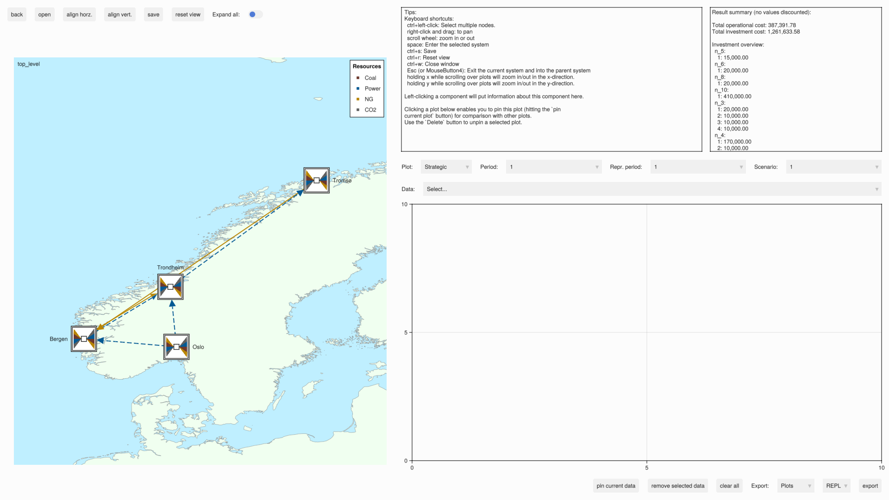

Example with functionality overview
For the content of the individual examples, see the examples directory in the project repository.
Installing the package
Enter Julia package mode (press ]) and run:
add EnergyModelsGUIIt might take a few minutes to install.
Then press BACKSPACE to exit package mode.
Running the GUI
From the Julia REPL (i.e, command-line in julia; julia>), run
# Starts the Julia REPL
using Pkg
using EnergyModelsGUI
# Get the path of the examples directory
exdir = joinpath(pkgdir(EnergyModelsGUI), "examples")
# Activate project for the examples in the EnergyModelsGUI repository
Pkg.activate(exdir)
Pkg.instantiate()
# Include the code into the Julia REPL to run the following example
include(joinpath(exdir, "EMI_geography.jl"))You should then get the following GUI: 
Functionality overview
The left fraction of the window shows a visualization of the topology with the following functionality:
- You can move a
Node/Areaby holding down the left mouse button and dragging to the desired location (at which you then release the left mouse button). TheLinks/Transmissionsto thisNode/Areawill be updated as well. All nodes associated with an area moves correspondingly when moving anAreaobject. TheAreaobjects are indicated by double line edges as in the example below (each city is anArea). A selectedNode/Areacan also be moved using the arrow keys. - Selecting a
Node/Area/Link/Transmission(by left-clicking) will print information about this object in the box on the top right. The selected object will have a green line style. - You can select multiple nodes/areas by holding down
ctrland left-clicking. - You can change the focus area (pan) of the window by holding down the right mouse button and dragging.
- You can zoom in and out by using the scroll wheel on the mouse.
- Hovering over a component will show the name and its type (and investments if it has occured).
- A Transmission mode from the
EnergyModelsGeographypackage will be dashed if it contains investment data (as can be seen in the example above from, i.e., Oslo to Bergen). ANodewill have dashed edges if it contains investment data and the same for assosiatedLinks. - The legend box of
Resources shows an overview of all resources incase[:Products]. - The upper-left label indicates at which level of the topology you are at (
top_levelis an overview of allAreas).
The toolbar on top left of the window provides the following functionality:
back: If currently in an area (opened by theopenbutton, see below), navigate back to theTop level. This button has the keyboard shortcutMouseButton4(orEsc). Note: This functionality only works when using theEnergyModelsGeographypackage, as in this example.open: Open an area by first selecting the area to open and then clicking this button. This button has the keyboard shortcutspace. Opening an area can also be accomplished by double clicking the area icon. Note: This functionality only works when using theEnergyModelsGeographypackage, as in this example.align horz.: Align selected nodes/areas horizontally.align vert.: Align selected nodes/areas vertically.save: Save the coordinates of theNodes/Areas to file (if there are multiple areas, a file for each area in addition to a file for theTop level). The location of these files can be assigned through thedesign_pathinput parameter to theGUIfunction (this feature has the shortcutctrl+s).reset view: Reset the view to the optimal view based on the current system if the view has been altered (this feature has the shortcutctrl+r).Exapnd all: Toggle this to show/hide all components of allAreas.
The first text area (to the left) shows some tips of using the GUI by defult, but is temporarily changed upon a selection of an EMX object in which information of this object is shown. The second text area (to the right) shows result summary (if available). Note that both these areas are scrollable.
The toolbar on middle left of the window provides the following functionality:
Plot: Activate one of the three available plots:Strategic: Strategic period plotRepresentative: Representative period plotOperational: Operational period plot
Period: Menu for choosing aStrategicPeriodfor a case.Representative period: Menu for choosing aRepresentativePeriodfor a case.Scenario: Menu for choosing aScenariofor a case.Data: Select the available data to be visualized in the plot area to the bottom right (if a component is selected, the menu will update to contain the available data for this component).
The bottom right fraction of the window shows a visualization of the results associated with the selected available data. It will automatically adjust when altering the different periods/scenarios.
- You can zoom into the plots by scrolling with the mouse wheel.
- Scrolling with the mouse wheel while holding in the x key will zoom in the x-direction and scrolling while holding the y key will zoom in the y-direction.
- Hovering plots shows the nearest data coordinate.
An additional toolbar on the bottom right is related to the plot area above and has the following functionality:
pin current data: Pin the latest plotted data, which enables comparing with other data in the same time type.remove selected data: After selecting a plot (left-click the line so it turns green), this button will remove it (the button has shortcutDelete). You can select multiple plots by holding thectrlkey while selecting.clear all: Removes all plots.- Export: Choose which data to export.
All: all data (or entire window)Plots: the current active plots
- Choose the export format (
REPLprints the data to the REPL). export: Export the data using the chosen setup.